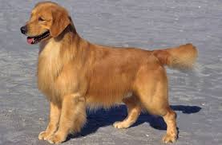

Golden Retrievers
The Golden Retriever is the classic family companion. They are obedient, playful, intelligent and nice to strangers. They are good watchdogs, but make lousy guard dogs as they love meeting new people. Golden Retrievers are extremely obedient and are often the champions of sporting competitions. Hunters find them to be good hunting dogs with their keen sense of smell and desire to work alongside people. Golden Retrievers love people and are best suited for large, active families.
More Facts about Golden Retrievers

- Males are 23 to 24 inches tall and weigh 65 to 75 pounds.
- Females are generally 21.5 to 22.5 inches tall and 55 to 65 pounds.
- Golden Retrievers usually reach their full height by one year of age, and their mature weight by two.
- Tiring them out with 20-30 minutes of vigorous exercise twice a day will keep your dog mellow when he's back inside. Slacking on the activity, however, could lead to behavior problems.
- Golden Retrievers need their teeth brushed at least two or three times a week to remove tartar buildup and the bacteria that lurk inside it
- Their nails need to be trimmed once or twice a month if your dog doesn't wear them down naturally. If you can hear them clicking on the floor, they're too long
- Recommended daily amount: 2 to 3 cups of high-quality dry food a day, divided into two meals